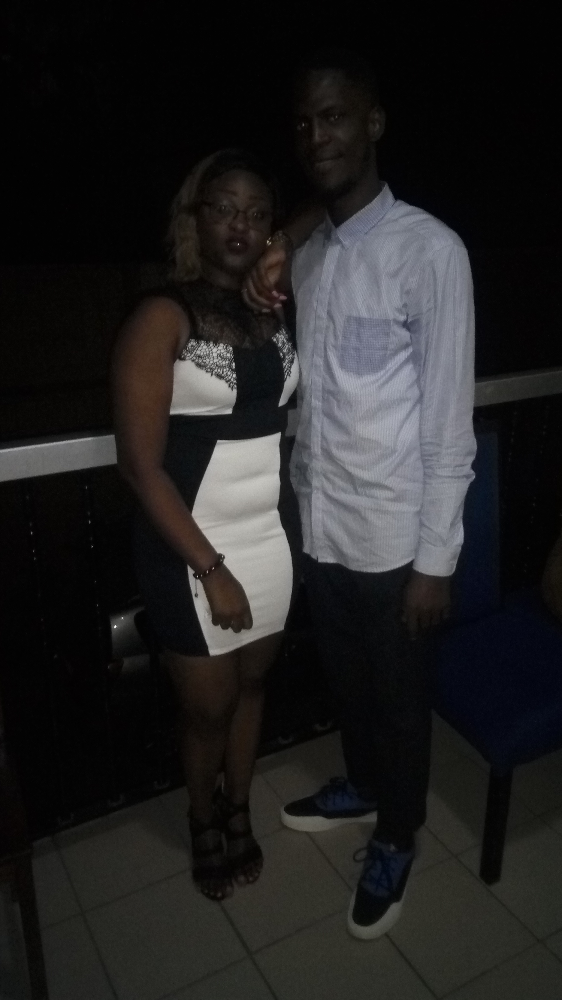
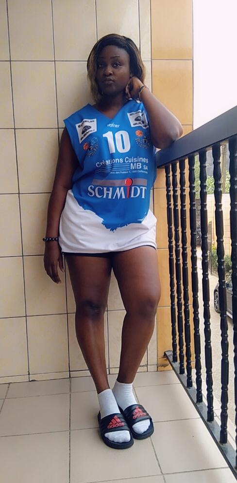
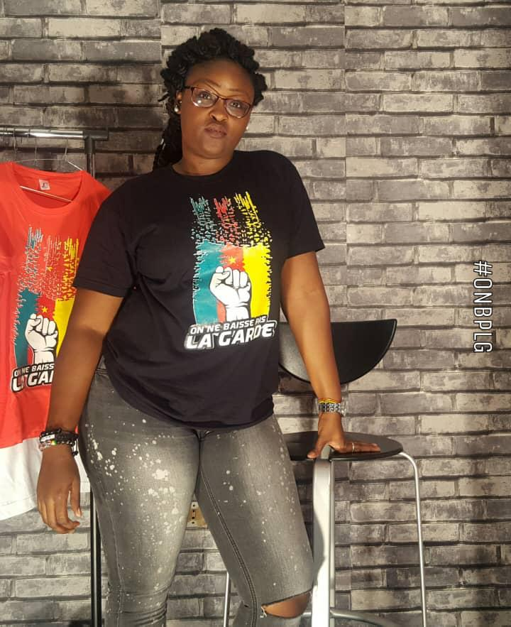

NAOMIE LESLIE

Je parles d'elle selon ma pensée
c'est une fille vraiment formidable, elle n'est vraiment pas comme les autres, elle a vraiment un grand coeur et c'est ça qui fait sa particularité pour moi. Elle a vraiment de très bonne pensée. Je me suis vite attaché à elle parce que avec elle je me sens en securité et je parvient à me surpasser dans tout ce dont je fais parce que chaque que je pense à elle je ne vois pas echouer, je vois seulement la réussite mais comme je sais que cette réussite est d'abord pour moi.
Premiere Pensee

NAOMIE
Notre amour est tellement lourd qu'il ne peut se porter par une seule personne, A partir du jour ou je suis tombé amoureux de toi j'ai compris que c'est mon avenir qui sonne, On pourra nous détester car nous sommees deux personnes qui raisonnent, Meme si on sait que c'est l'amour qui fait sortir de prison, Interdit moi tous les lieux mais pas celui ton corps; Etre seul c'zst vrai mais sale car etre avec toi c'est plus propre.
Deuxieme Pensee

LESLIE
Laisse moi me torturer car l'amour necessite l'envie, le courage et la force; Est ce qu'il y'a quelque chose en moi que tu ne sais pas encore. Sauf que tu ne te fache pas contre moi si mon amour créer le désordre, Leslie sache que mon amour pour toi pourrait etre un enfers si ce sont les ordres. Influence moi tout ton amour Et je te prouverai que toi et moi c'est pour toujours.